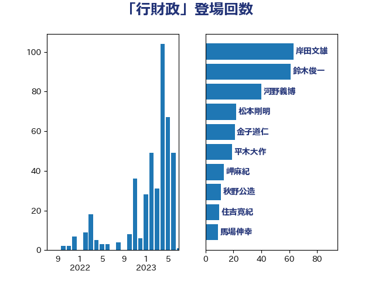

単語「行財政」

| 岸田文雄 | 自由民主党 | 63 回 |
| 鈴木俊一 | 自由民主党 | 61 回 |
| 河野義博 | 公明党 | 40 回 |
| 松本剛明 | 自由民主党 | 22 回 |
| 金子道仁 | 日本維新の会 | 21 回 |
| 平木大作 | 公明党 | 19 回 |
| 岬麻紀 | 日本維新の会 | 13 回 |
| 秋野公造 | 公明党 | 11 回 |
| 住吉寛紀 | 日本維新の会 | 10 回 |
| 馬場伸幸 | 日本維新の会 | 9 回 |
| 足立康史 | 日本維新の会 | 7 回 |
| 梅村聡 | 日本維新の会 | 7 回 |
| 田島麻衣子 | 立憲民主党 | 6 回 |
| 井上貴博 | 自由民主党 | 6 回 |
| 滝波宏文 | 自由民主党 | 5 回 |
| 清水貴之 | 日本維新の会 | 5 回 |
| 浅田均 | 日本維新の会 | 4 回 |
| 池畑浩太朗 | 日本維新の会 | 4 回 |
| 江田憲司 | 立憲民主党 | 4 回 |
| 和田有一朗 | 日本維新の会 | 4 回 |
| 階猛 | 立憲民主党 | 3 回 |
| 金子恭之 | 自由民主党 | 3 回 |
| 野田国義 | 立憲民主党 | 3 回 |
| 神谷宗幣 | 参政党 | 3 回 |
| 石井拓 | 自由民主党 | 3 回 |
| 宮本岳志 | 日本共産党 | 3 回 |
| 音喜多駿 | 日本維新の会 | 2 回 |
| 遠藤敬 | 日本維新の会 | 2 回 |
| 藤巻健太 | 日本維新の会 | 2 回 |
| 米山隆一 | 立憲民主党 | 2 回 |
| 石井章 | 日本維新の会 | 2 回 |
| 牧義夫 | 立憲民主党 | 2 回 |
| 櫻井周 | 立憲民主党 | 2 回 |
| 横沢高徳 | 立憲民主党 | 2 回 |
| 梅村みずほ | 日本維新の会 | 2 回 |
| 柳本顕 | 自由民主党 | 2 回 |
| 林芳正 | 自由民主党 | 2 回 |
| 新谷正義 | 自由民主党 | 2 回 |
| 山添拓 | 日本共産党 | 2 回 |
| 小倉將信 | 自由民主党 | 2 回 |
| 寺田稔 | 自由民主党 | 2 回 |
| 伊藤岳 | 日本共産党 | 2 回 |
| 井原巧 | 自由民主党 | 2 回 |
| 阿部司 | 日本維新の会 | 1 回 |
| 重徳和彦 | 立憲民主党 | 1 回 |
| 越智隆雄 | 自由民主党 | 1 回 |
| 西岡秀子 | 国民民主党 | 1 回 |
| 藤岡隆雄 | 立憲民主党 | 1 回 |
| 細田博之 | 自由民主党 | 1 回 |
| 竹詰仁 | 国民民主党 | 1 回 |
| 竹内譲 | 公明党 | 1 回 |
| 石田昌宏 | 自由民主党 | 1 回 |
| 石井正弘 | 自由民主党 | 1 回 |
| 田村智子 | 日本共産党 | 1 回 |
| 片山大介 | 日本維新の会 | 1 回 |
| 津島淳 | 自由民主党 | 1 回 |
| 沢田良 | 日本維新の会 | 1 回 |
| 水岡俊一 | 立憲民主党 | 1 回 |
| 柴田巧 | 日本維新の会 | 1 回 |
| 柳ヶ瀬裕文 | 日本維新の会 | 1 回 |
| 東徹 | 日本維新の会 | 1 回 |
| 杉本和巳 | 日本維新の会 | 1 回 |
| 岸真紀子 | 立憲民主党 | 1 回 |
| 岩谷良平 | 日本維新の会 | 1 回 |
| 岡本あき子 | 立憲民主党 | 1 回 |
| 山口俊一 | 自由民主党 | 1 回 |
| 小沢雅仁 | 立憲民主党 | 1 回 |
| 宮路拓馬 | 自由民主党 | 1 回 |
| 守島正 | 日本維新の会 | 1 回 |
| 大西健介 | 立憲民主党 | 1 回 |
| 古賀友一郎 | 自由民主党 | 1 回 |
| 古賀千景 | 立憲民主党 | 1 回 |
| 原口一博 | 立憲民主党 | 1 回 |
| 佐藤信秋 | 自由民主党 | 1 回 |
| 佐々木紀 | 自由民主党 | 1 回 |
| 中西健治 | 自由民主党 | 1 回 |
| 中司宏 | 日本維新の会 | 1 回 |
| 一谷勇一郎 | 日本維新の会 | 1 回 |
| おおつき紅葉 | 立憲民主党 | 1 回 |